CS 280A Project 5: Fun With Diffusion Models!
Part A: The Power of Diffusion Models
In this section, I experiment with inputs and outputs for DeepFloyd IF, a two-stage diffusion model trained by Stability AI.
First, to get a basic sense of the model, I came up with some prompts and generated their text embeddings using a Huggingface cluster. These are the prompts I generated,
- a high quality photo
- an owl teaching a class of rats
- an orca whale escaping its enclosure at Sea World
- a Chinese city in ruins
- a tired student walking to class in the morning
- a teapot filled with the most enticing tea
- whales kissing
- a photo of whales kissing
- a man waking up to discover that he has been transformed into a cockroach
- a waterfall of blood
- a gorgeous sunflower emerging from ruins
- an oil painting of two whales kissing underwater
- an oil painting of two faces almost touching
- an oil painting of a butterfly wings
- an oil painting of two blooming flowers
- a frowning old man's wrinkly face
- a smiling young woman's face
- a hippo standing on four legs in the desert
- a small house cat standing on four legs
- a jug of milk
- two identical black and white skyscrapers
- a teacher teaching a class full of students

This image was generated with 55 inference steps. Interestingly, the model generated two images of a whale that are similar but distinct. The figure standing on the deck is not a very convincing human, and the shape of the pool does not make sense. Furthermore, the whale is not escaping, as prompted, but merely jumping out of the water as orcas often do at Sea World. Of all the images, this one matches its prompt the least.
This image was generated with 100 inference steps. Interestingly, the image is produced in an animated style as opposed to a realistic one. Perhaps the absurdity of the prompt led to this result. I also generated this image with fewer inference steps, and in comparison, the rats all look very good and consistent. It does resemble a reasonable classroom setting, though the owl's returning gaze toward the camera does not exactly suggest ‘teaching.’

This image was generated with only 20 inference steps. Even with fewer inference steps, I like this image a lot. It shows not only ruins and abandonment, but a mysterious fog over the landscape. The buildings look reasonably realistic and also beautiful. Only when you zoom in is it clear that the image has faults. I think the artistic liberties of this photo evoke a feeling of loss and mystery and reminds me of my visit to Pompeii.
Since I'm least satisfied with the whale image despite a prompt I was excited about, I've asked the model to generate an image on the same prompt, this time with num_inference_steps increased to 1,000.

Interestingly, this image is in many ways worse. The saturation is very high, there are mysterious green trails and bright specks in the water, there are still mysterious pool shapes happening under the whale, and I see a rather docile whale rather than one trying to escape.
Part 1: Sampling loops
In this section, I implement and modify sampling loops using the pretrained DeepFloyd denoisers to create optical illusions.
1.1 Implementing the Forward Pass
Below we can see an image of the Berkeley Campanile at progressively higher noise levels by the following equqation, $$ q(x_t \mid x_0) = \mathcal{N}\!\left(x_t;\, \sqrt{\bar{\alpha}_t}\, x_0,\; (1 - \bar{\alpha}_t) I \right) $$ Equivalently, $$ x_t = \sqrt{\bar{\alpha}_t}\, x_0 + \sqrt{1 - \bar{\alpha}_t}\, \epsilon \quad \text{where } \epsilon \sim \mathcal{N}(0,1) $$ Where $x_t$ is a noisy image at timestep $t$ and $x_0$ is the clean image. We see the original image, followed by versions corrupted at timesteps \( t=250, t=500, \) and \( t=750. \)
 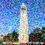
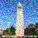
 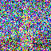
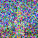
1.2 Denoising with Gaussian blur
Below, I implement a naive denoising method. Each noised image is convolved with a 5×5 Gaussian kernel with a standard deviation of 1.5 in both directions. Although this smoothing reduces the apparent noise, it does not fully recover the original image. By \( t=750 \), there remains only a faint outline of the Campanile.


1.3 One-step Denoising
Here I use a pretrained diffusion model (stage_1.unet) to denoise the Campanile image at timesteps $t = 250$, $t = 500$, and $t = 750$. As this is a text-conditioned model, we use the embedding for "a high quality photo" to pass to the denoiser. For each timestep, we display the original image, the noisy image, and the model’s reconstruction.

1.4 Iterative Denoising
In part 1.3 above, the 1-step denoising proves much more effective than using a Gaussian filter. However, the quality is notably worse for higher $t$. Here we implement iterative denoising using the same pretrained model and according to the followig formula:
Where, $x_t$ is the image at timestep $t$, $x_{t'}$ is the the noisy image at the previous timestep $t' < t$, and $x_0$ is the current one-step estimate of the clean image. This is essentially a linear interpolation between the signal and the noise. Iteratively, we run this from $t=690$ to $t=0$ to obtain a denoised image. Below we see the process as $t$ decreeases from $t=690, t=540, t=390, t=90,$ and finally $t=0$. Interestingly, the algorithm created a new top of the building but is otherwise convincing enough.


1.5 Diffusion Model Sampling
Here I generate images by starting with a fully randomly-noised image and setting i_start = 0 for the iterative denoising process with the prompt, "a high quality photo". The results of denoising 5 random noise samples are below.


1.6 Classifier-Free Guidance
In this section we use classifier-free guidance to improve the quality of the images generated by the diffusion model. In this approach, we compute a noise estimate conditioned on a text prompt as well as an unconditional noise estimate (generated by passing an empty prompt embedding to the model). Our new noise estimate is given by the equation below,
\( \epsilon = \epsilon_u + \gamma (\epsilon_c - \epsilon_u) \)
where \( \gamma \) controls the strength of the CFG. Here we set \( \gamma = 7 \) and generate five higher quality example photos below.


1.7 Image-to-image translation
Now, to visualize the model’s creativity, I add noise to the Campanile image and iteratively denoise it using the conditional text prompt “a high-quality photo.” This forces the model to hallucinate new details from an existing structure. As a result, we see (below) a sequence of images that increasingly resemble the original Campanile. The image on the left is generated from the Campanile noised at timestep $t=960$ (nearly fully noised), and each subsequent image uses a slightly lower noise level. As the noise decreases, the denoised image gradually recovers the structure of the Campanile.


I repeat the exact same process with two of my sampled photos below.

 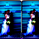
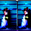


 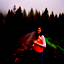
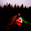

1.7.1 Editing Hand-Drawn and Web Images
Here I repeat the process above with a web image of the Mona Lisa. This image is so circulated and reproduced that the model is able to predict it much earlier than previous examples.


Below run it again with some hand drawn photos. The first photo I use is,

In this first example, the model does a good job interpreting the photo, even adding tears to the subject along the way. However, it does not take it into the natural image manifold, perhaps because the rainbow is so rigidly defined.


For the second example, I tried to keep more vague figures and lines in order to allow the model to interpret more freely. However, I think the cartoonish colors (and debatably poorly drawn photos) make it difficult to direct the model.


1.7.2 Inpainting
Using the RePaint-style inpainting procedure, I edited the top of the Campanile by running the diffusion denoising loop while constraining all unmasked pixels to remain consistent with the original image. At each timestep, after predicting the denoised image, I overwrote the unedited regions with the corresponding pixels from the original image, properly noised for that timestep, while allowing the masked region to be freely generated by the model. This iterative process produced a final image where only the selected area was newly synthesized, and the rest of the photograph remained unchanged. The procedure is defined by the equation below,
\( x_t = mx_t + (1-m)*forward(x_{orig}, t) \)

Also create custom masks for two test images below. What might the model make sense of the space where the rats should be in the 'owl teaching rats photo'?

Or, instead of creating two whales, what would it do with the extra space given an opportunity to re-render?

1.7.3 Text-Conditional Image-to-image Translation
Now, instead of using a null prompt embedding, I guide the projection with a text prompt to see two images converge over iterations.


 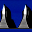
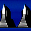


 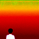
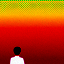

 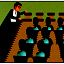
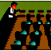

1.8 Visual anagrams
Here I utilized the diffusion to create optical illusions. At each denoising step, I ran the UNet twice: once on the current noisy image with the first prompt, and once on the vertically flipped image with the second prompt. I then flipped the second output back, averaged the two noise estimates, and used this averaged noise for the reverse diffusion update. Iterating this process produced a single image that encodes both prompts, depending on its orientation. Mathematically, we replace our noise estimate with the one below,
\( \epsilon_2 = Flip(CFG of UNet(flip(x_t), t, p_2) \)
\( \epsilon = (\epsilon_1 + \epsilon_2)/2 \)


1.9 Hybrid images
Using Factorized Diffusion, I created hybrid images by combining low- and high-frequency information from two different text prompts. At each denoising step, I ran the UNet twice with two prompts to obtain two noise estimates, then applied a Gaussian blur (kernel size 33, sigma 2) to extract low frequencies from one estimate and high frequencies from the other. I added these together to form a composite noise estimate, which I used in the reverse diffusion update. Repeating this process produced a single hybrid image that simultaneously reflects both prompts at different spatial frequency scales. Mathematically, the new noise estimate is given by,
\( \epsilon_2 = CFG of UNet(x_t, t, p_2) \)
\( \epsilon = highpass( \epsilon_1 ) + lowpass( \epsilon_2 ) \)
To encourage better results (especially at 64x64 images), I made prompts that emphasized low and high features respecitvely. For example, a high frequency prompt might emphasize wrinkles, sharp lines, etc. while a low frequency prompt should emphasize smoothness, low contract elements. I made prompts that would intentially create overlapping shapes for a convincing result. There are two examples below.


Bells and Whistles: More Visual Anagrams
Here I implement two additional illusions using methods described in this paper.
Four-view visual anagrams
First, similar to the flipped image above, I used the model to create image with using four different text emeddings that can be viewed differently from four diffrent angles. At each denoising step, the UNet ran 4 times, once per each of the 4 rotations (0deg, 90deg, 180deg, and 270deg) of the noisy image. Each rotated image was paired with it's prompt when passed the model for a noise estimate. I then average all four noise estimates for the diffusion update. Doing so encoded four different prompts into the same image, each hopefully becoming dominate when viewed from its cooresponding rotation angle. Mathematically, the noise estimate calculated by these equations,
\( \epsilon_2 = \mathrm{RotateBack}_{90^\circ}\!\Big(CFG\big(\mathrm{UNet}(\mathrm{Rotate}_{90^\circ}(x_t),\; t,\; p_2)\big)\Big) \)
\( \epsilon_3 = \mathrm{RotateBack}_{180^\circ}\!\Big(CFG\big(\mathrm{UNet}(\mathrm{Rotate}_{180^\circ}(x_t),\; t,\; p_3)\big)\Big) \)
\( \epsilon_4 = \mathrm{RotateBack}_{270^\circ}\!\Big(CFG\big(\mathrm{UNet}(\mathrm{Rotate}_{270^\circ}(x_t),\; t,\; p_4)\big)\Big) \)
\( \epsilon = \tfrac{1}{4}(\epsilon_1 + \epsilon_2 + \epsilon_3 + \epsilon_4) \)
Using the prompt embeddings for "an oil painting of beautiful flowers", "an oil painting of a giraffe", "an oil painting of woman's face", and "an oil painting of a dog", here are three example outputs from the model. Interestingly, some prompts sometimes dominate the image while some are sometimes harder to notice.


Two-view negatives
To create the negative optical illusion, I modify the denoising process similar to the above example. Each timestep uses both the noisy image and its negative. Using the first prompt, the UNet predicts noise under the first promp and likewise for the second prompt. I negate the second noise estimate again, and use their average as my noise estimte, according to the equations below,
\( \epsilon_2 = -CFG(\mathrm{UNet}(-x_t,\; t,\; p_2)) \)
\( \epsilon = \tfrac{1}{2}(\epsilon_1 + \epsilon_2) \)
Below we see 3 examples, where the negative of one image shows a completely different prompt.


Class logo
Here I implement text-conditioned image-to-image translation on the image of the Campanile with the prompt "the Berkeley Campanile drawn as a neural network graph, glowing connections, blue and gold nodes, futuristic look". The best results appeared at high timesteps (800-900), and show a nice animated yet recognizable Campanile with a "Neural Network" theme that represents the theme of this class well. Five example outputs are below.
Part 2: Flow Matching From Scratch
Here I implemented a UNet defined by the following architecture,


At a high level, the blocks do the following,
- Conv is a convolutional layer that doesn't change the image resolution, only the channel dimension.
- DownConv is a convolutional layer that downsamples the tensor by 2.
- UpConv is a convolutional layer that upsamples the tensor by 2.
- Flatten is an average pooling layer that flattens a 7x7 tensor into a 1x1 tensor. 7 is the resulting height and width after the downsampling operations.
- Unflatten is a convolutional layer that unflattens/upsamples a 1x1 tensor into a 7x7 tensor.
- Concat is a channel-wise concatenation between tensors with the same 2D shape.
1.2 Using the UNet to Train a Denoiser
To train my denoiser, I generate training pairs (x, z) where x is a clean image from the MNIST dataset and z is x with sampled noise added, via this process:
I will define loss as the MSE between x and z,
Here we visualize the noising process over different \( \sigma \in [0.0, 0.2, 0.4, 0.5, 0.6, 0.8, 1.0] \)
 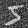
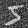

 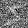
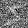
 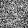
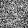
1.2.1 Training
Here I train the model with a noise level of 0.5 for 5 epochs with a batch size of 256. The MSE training loss curve is below, along with three example inputs and outputs.

 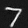
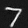


1.2.2 Out-of-Distribution Testing
Since the UNet was trained with a noise level of 0.5, we can't expect it to generalize to all noise levels. Here we see three test images noised at each value \( \sigma \in \) [0.0, 0.2, 0.4, 0.5, 0.6, 0.8, 1.0]. Each row below cooresponds to each increasing noise level, and within in row I show how the model performs across the three test images. As you can see, the model has reasonable performance even at a high noise level.


 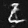
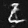


1.2.3 Denoising Pure Noise
To make denoising a general task, I will retrain the model where \( z = \epsilon \) and \( \epsilon \sim N(0, I) \), and denoising to get a clean \( x \). Below, we see the denoising results on 3 pure noise after the first epoch, the fifth epoch, and the training curve. The results for each image are nearly identical. This task is distinct from the first since the inputs now carry zero information about the targets, whereas before the target number in the input was visible to the human eye. The result is that the outputs appear to be a rough average of all digits. This makes sense, since random noise is trained to map to all digits. With MSE loss, the model learns to predict the point that minimizes the sum of squared distances to all training examples.
 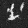
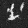


Part 2: Training a Flow Matching Model
As one step denoising proved inaccurate, here I implement iterative denoising with flow matching. Here, I sample a pure noise image \( x_0 \sim N(0,I) \) to
generate a realistic image \( x_1 \). I do so by a linear interpolation between \( x_0 \) and \( x_1 \):
The result is a vector field describing a point \( x_t \) at time \( t \) in flow and relative to both the clean and noisy data distributions. We can think of
this flow as a the velocity of the vector field descrbing how to move from \( x_0 \) to \( x_1 \).
Here I train a UNet \( u_{\theta}(x_t, t) \) that approximates this flow/velocity, thus allowing predictive denoising.
2.1 Adding Time Conditioning to UNet
The structure of the time conditioned UNet is similar to the unconditional UNet, with a scalar \( t \) injected as shown in the diagram below.
2.2 Below is the training curve for the time conditioned UNet over 10 epochs.
2.3 Sampling from the UNet
Now, to sample from the UNet, we take a pure noise image \( x_0 = x_t\) and run it through 100 timesteps. In each step, we push \( x_t \) in the direction (given by the UNet) of a denoised image. Below are 5 samples from the UNet trained for 1 epoch, 5 epochs, and 10 epochs. At the first epoch, the images do not appear noisy, but neither do they resemble digits. After the 5th, and even better after the 10th epoch, we start to see recognizable digits emerge.


Bells and whistles: Improving the time conditioned UNet
While these results are denoised, they hardly represent real numbers. In fact, only a few samples above may be classified as a handwritten digit.
It makes sense that without class labels the model learns a single velocity field that leads random noise to blurred or averaged digit shapes.
To improve the results, I first increased the complexity of the model by doubling the hidden dimensions from 64 to 128, thus giving the UNet more capacity
to model the MNIST distribution. I thought that this may decrease the averaging of digits in the result by allowing more differentiation.
I also increased the number of epochs from 10 to 25, allowing the model more time to converge. I increased the number of timesteps to 150, allowing
the model to spend more time breaking apart the noise.
Together, these changes produces signifcantly more recognizable digits, as shown below with 10 additional samples.


2.4 Class Conditioning
To improve the results, I add class conditioning to the model, where each class cooresponds to a class of digit 0-9. Similarly to how I added the time conditioning, I add two more FCBlocks to the UNet that incorporate the one-hot class-conditioning vector, \( c \). Because I still want this UNet to work without class conditioning, I add a dropout rate of 10% where the class conditioning vector is set to 0.
2.5 Training the UNet
Below is a graph of the training curve from the class-conditioned UNet over 10 epochs.

2.6 Sampling from the UNet
Below, I show sample results from the class-encoding and classifier-free guidance with a guidance scale of 5. Results are shown after 1, 5, and 10 epochs. The first result is still very grainy with very deformed digits. However, by the fifth epoch, the results are entirely convincing with only minor improvements by the 10th epoch.


Finally, to make the model simpler, we experiment with removing the learning rate scheduler. Right now the learning rate starts at 1e-2. The scheduler is initialized with \( \gamma = 0.1^{1/10} = 0.79 \). By the tenth epoch, \( 0.79^{10} = 0.1 \), and thus the learning rate decays to roughly 1e-3 by the tenth epoch.
As you can see in the first figure below, after removing the scheduler, the results remain very strong. However, the 4 in row 0, the 2 in row 3, and the 7 and 8 in row 1 (0 based rows) are examples where the model performance declines. We also see some random splotches of white by several images. This suggests that the algorithm is still reaching a reasonable local minimum region for the loss, but due to the high learning rate, does not refine into the actual local minimum.
To account for removing the scheduler, I trained the model with a lower learning rate of 1e-3 and increased the epochs from 10 to 15 in order to allow more time to explore and ultimately acheive a local minimum. The results, shown in the final figure below, are then comparable to the model trained with the scheduler, with only minor issues such as seveal 6's missing holes and some auxilary faint dots. We no longer see deformed numbers as in the first result.